1. Kawazuzakura
Kawazuzakura (河津 ザ ク ラ) là một loại hoa anh đào cụ thể có thể được nhìn thấy ở khu vực Kawazu nằm trên bán đảo Izu thuộc tỉnh Shizuoka. Nó được biết đến như một loài hoa anh đào nở sớm, và những bông hoa xinh đẹp của nó bắt đầu nở từ đầu tháng 2. Hoa có cánh hoa lớn có màu hồng đậm.
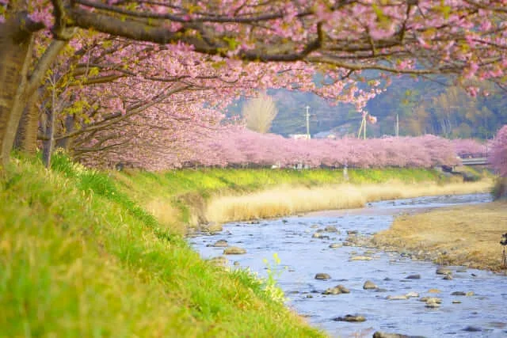
河津川沿いでは、毎年2月上旬から3月上旬にかけて河津桜まつりが開催され、何百万人もの観光客が訪れます。川沿いに約800本の桜が咲き誇る人気イベントがあります。
Website: http://kawazuzakura.info/
2. Mother Farm(マザー牧場)
Là một điểm thu hút khách du lịch nổi tiếng ở tỉnh Chiba cũng là điểm du lịch lý tưởng trong mùa xuân ở Nhật tiếp theo. Tọa lạc trên núi Kano, nó có diện tích 250ha rộng lớn, thích hợp cho một loạt các hoạt động ngoài trời và các điểm tham quan giải trí.
Du khách có thể thích tương tác với các loài động vật dễ thương như cừu, ngựa, bò… Cưỡi ngựa là một trong những hoạt động phổ biến nhất của trẻ em. Trang trại cũng là nơi trồng nhiều loại hoa theo mùa.
Website: http://www.motherfarm.co.jp/
3. Huis Ten Bosch
Huis Ten Bosch được biết đến là một trong những công viên giải trí nổi tiếng nhất ở Nhật Bản. Nó nằm ở tỉnh Nagasaki trong vùng Kyushu, và thu hút gần 3 triệu du khách mỗi năm. Các tòa nhà kiểu phương Tây dựa trên cảnh quan thị trấn được tìm thấy ở Hà Lan vào thế kỷ 17. Tên của công viên có nghĩa là “ngôi nhà của rừng” trong tiếng Hà Lan. Công viên có dòng sông êm đềm chạy qua công viên dài 8 km, dọc theo đó những ngôi nhà và các công trình kiến trúc khác được xây dựng.
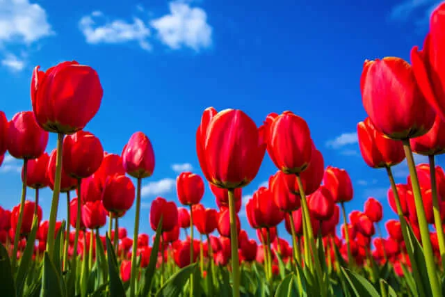
Vào mùa xuân, toàn bộ công viên tràn ngập những loài hoa đẹp và những loài thực vật mọc ở Hà Lan như hoa tulip và hoa hồng. Thực đơn món đặc biệt và đồ ngọt chỉ có thể thưởng thức trong mùa cụ thể đó được phục vụ tại các nhà hàng và quán cà phê. Vào ban đêm, bạn cảm thấy như thể bạn đang ở một nơi hoàn toàn khác biệt.
Website: https://www.huistenbosch.co.jp/
4. Isumirail
Đường sắt Isumi là một tuyến đường sắt dài 26,8 km nằm ở phía đông của bán đảo Boso, tỉnh Chiba. Kể từ khi mở cửa vào năm 1988, nó kết nối Ga Ohara với Ga Kazusa Nakano với một chuyến tàu yên bình, băng qua phong cảnh nông thôn tuyệt đẹp mà bạn có thể thưởng ngoạn qua cửa sổ của mình.
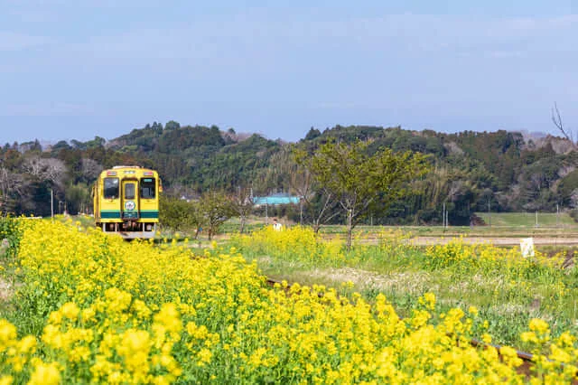
Mặc dù nó không nhận được một lượng lớn hành khách như các tuyến đường sắt lớn ở các thành phố lớn, nhưng nhiều người đến đó để thưởng thức hoa cải (còn được gọi là Nano Hana trong tiếng Nhật), những bông hoa màu vàng tuyệt đẹp bắt đầu nở từ giữa tháng Ba đến đầu tháng Tư. Từ cuối tháng 3, bạn cũng có thể tận hưởng sự tương phản đáng kinh ngạc giữa màu vàng của hoa cải và hồng của sakura.
Website: https://isumirail.co.jp/
5. Ume Inabe Festival
Cùng với hoa anh đào, mận là một loài hoa biểu tượng khác báo hiệu mùa xuân đến. Chúng bắt đầu nở sớm hơn một chút so với hoa anh đào; những bông hoa nhỏ màu hồng đậm hơn có thể được thưởng thức từ giữa tháng Hai trở đi.
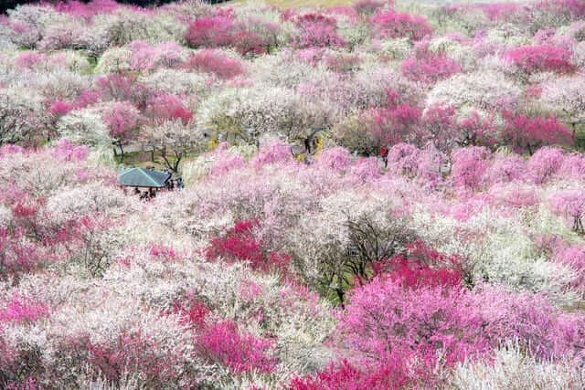
Lễ hội Ume Inabe là một lễ hội nổi tiếng được tổ chức vào mùa xuân hàng năm ở tỉnh Mie, nơi bạn có thể tìm thấy một trong những trang trại trồng mận lớn nhất, có diện tích khoảng 38ha, ở thành phố Inabe Nogyo-koen. Thỏa sức khám phá công viên tuyệt đẹp trong khi ngắm nhìn 4.000 cây mận trải khắp công viên với những bông hoa màu hồng và trắng với nền là dãy núi Suzuka. Vào cuối tuần đầu tiên hoặc thứ hai của tháng 3, một sự kiện ẩm thực đặc biệt mang tên Umaimon-ichi (うまいもん市) cũng được tổ chức. Tại sự kiện, bạn sẽ có cơ hội thử các món đặc sản địa phương từ một số vùng lân cận!
Website: #
6. Shiudeyama
Shiudeyama là một ngọn núi có phong cảnh đẹp nằm ở tỉnh Kagawa, vùng Shikoku. Hướng ra Biển Nội địa Seto, nơi đây có tầm nhìn tuyệt đẹp ra cụm đảo xa từ đài quan sát trên đỉnh cao 352m so với mực nước biển.
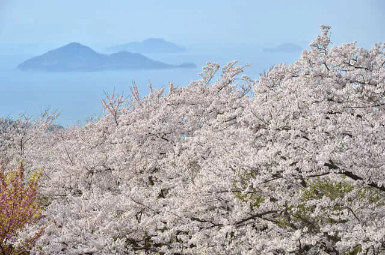
Giữa cuối tháng 3 và đầu tháng 4, toàn bộ ngọn núi được bao phủ bởi hoa anh đào hùng vĩ tạo nên một khung cảnh ngoạn mục. Những cánh hoa hồng bao phủ các con đường và tạo ra một bầu không khí huyền diệu là một cảnh tượng đáng để chiêm ngưỡng. Mặc dù vị trí hẻo lánh hơi xa so với các điểm du lịch lớn như Tokyo và Osaka, nhưng đây chắc chắn là nơi đáng để ghé thăm! Bạn có thể đi tàu cao tốc hoặc chuyến bay nội địa.
Website: #
7. Yoshido yama
Yoshidoyama được biết đến rộng rãi như một địa điểm ngắm hoa anh đào tuyệt vời nằm ở tỉnh Nara. Ngọn núi được bao phủ bởi hàng ngàn cây anh đào, tạo nên một khung cảnh tuyệt đẹp.

Nara là nơi có các di tích lịch sử nổi tiếng thế giới như chùa Todai-ji và loài hươu thả rông nổi tiếng thu hút rất nhiều du khách. Vào mùa xuân, thành phố Nara thu hút du khách tới đây để ngắm nhìn dãy núi mang tính biểu tượng được bao phủ bởi sắc hoa anh đào tuyệt đẹp.
Website: #
8. Kawachi Fujien Wisteria Garden
Nếu bạn muốn thưởng thức hoa mùa xuân ngoài hoa anh đào, bạn nên đến thăm vườn hoa Tử Đằng Kawachi ở tỉnh Fukuoka. Khu vườn chào đón du khách với khung cảnh hùng vĩ được tạo nên bởi hàng ngàn bông hoa Tử Đằng. Chúng có nhiều màu sắc bao gồm tím, trắng và hồng, tạo ra một sự tương phản vô cùng đẹp mắt cùng với thiên nhiên xung quanh.
Website: #
9. Hirosaki Koen
Nằm ở tỉnh Aomori, công viên Hirosaki được nhiều người biết đến là một trong những điểm ngắm hoa anh đào đẹp nhất ở vùng Tohoku. Từ giữa tháng 4 đến đầu tháng 5, toàn bộ công viên chật kín du khách từ khắp nơi trên Nhật Bản, những người muốn chứng kiến cảnh đẹp ngoạn mục được tạo nên bởi những bông hoa anh đào xinh đẹp và lâu đài Hirosaki.
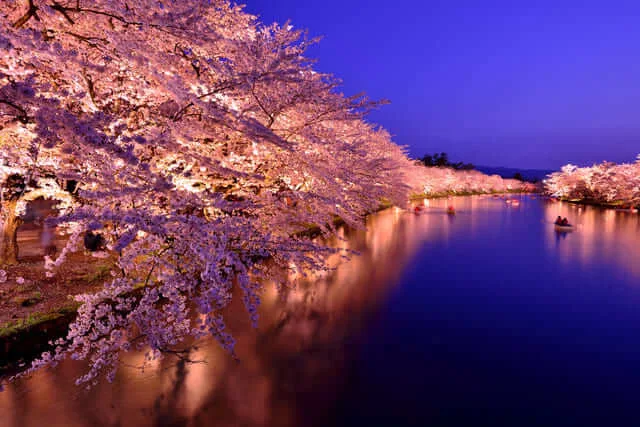
Lâu đài Hirosaki chính thức được chỉ định là một trong 12 lâu đài ban đầu được xây dựng vào thời kỳ Edo (1603-1868) hoặc sớm hơn. Đi du ngoạn bằng thuyền nổi tiếng trong hào quanh lâu đài mang đến cho bạn một trải nghiệm thú vị. Thưởng thức ngắm nhìn những bông hoa màu hồng nhảy múa trong không trung hoặc trôi nổi trên mặt nước một cách duyên dáng!
10. Awa Katsuura Hina Matsuri
Hina Matsuri là một phong tục truyền thống của Nhật Bản được tổ chức vào ngày 3 tháng 3 hàng năm. Mọi người kỷ niệm ngày đặc biệt bằng cách trưng bày những con búp bê hina xinh đẹp, ‘hina ningyou‘, mặc kimono, loại quần áo truyền thống của Nhật Bản.
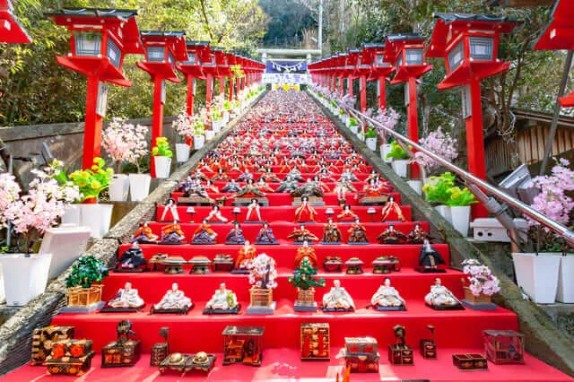
Trên khắp Nhật Bản, nhiều lễ hội Hina được tổ chức với lễ hội nổi tiếng nhất là Awa Katsuura Hina Matsuri, được tổ chức hàng năm ở tỉnh Tokushima. Nó có rất nhiều búp bê Hina Matsuri được trưng bày trên một bệ khổng lồ cao 7m. Hơn 20.000 búp bê được quyên góp từ khắp Nhật Bản cũng được trưng bày để thu hút du khách! Có rất nhiều gian hàng thực phẩm bán các món ăn đường phố địa phương và toàn bộ sự kiện là một trải nghiệm thú vị.
Website: https://bighinamaturi.jp/
11. Shukugawa Koen
Đây là công viên nằm ở thành phố Nishinomiya, tỉnh Hyogo. Năm 1949, dưới sự chỉ đạo của ông Sasabe Shintaro, 1000 cây hoa anh đào đã được trồng ở nơi đây. Hiện tại, từ tuyến Harbor tới gần khu vực cầu Kita-Shukugawa có khoảng 1700 cây hoa anh đào nối liền nhau, kéo dài 2.7 km. Ở khu vực Hanshin cũng có nhiều điểm du lịch ngắm hoa anh đào. Lễ hội Sakura Nishinomiya được tổ chức đầu tháng 4, thu hút khoảng 100 nghìn lượt khách đến tham quan. Năm 1990, công viên Shukugawa đã được Hội tuyển chọn hoa anh đào Nhật Bản bầu chọn vào danh sách "100 địa điểm ngắm hoa anh đào hấp dẫn nhất" trên toàn quốc.
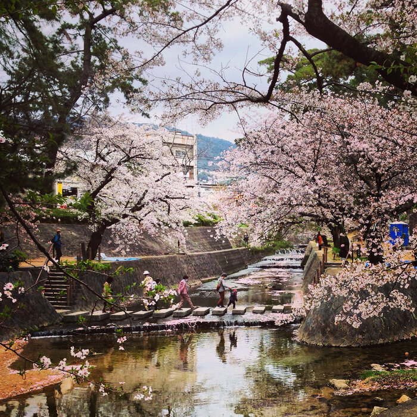
Khoảng 1.700 cây anh đào được trồng dọc theo sông Shukugawa dài hơn 2,8 km, và chỉ riêng ở Somei Yoshino đã có 1.200 cây anh đào. Ngắm khung cảnh hòa quyện của anh đào nằm dọc hai bên bờ sông và dòng nước trong xanh phía dưới như in bóng và ghi lại mọi cảnh sắc trên bờ từ những bông hoa, bầu trời cao vút, những tia nắng ấm càng khiến mọi người cảm nhận được vẻ đẹp thiên nhiên nơi đây.
Website: #
12. Ono
Địa điểm cuối cùng trong danh sách ngày hôm nay chắc chắn sẽ để lại rất nhiều ấn tượng cho du khách, được mệnh danh là “hành lang Sakura Dzutsumi” - nơi bạn sẽ có cảm giác hoa anh đào kéo dài bất tận. Đây là một trong những điểm ngắm hoa anh đào đẹp nhất ở Thành phố Ono, và được cho là một trong những điểm lớn nhất ở miền Tây Nhật Bản, với khoảng 650 cây anh đào được trồng trên cả hai bờ của bờ kè Kakogawa chạy qua khu vực phía Tây của thành phố. và trên tổng chiều dài khoảng 4 km.
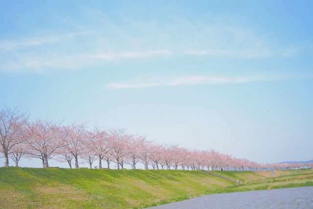
Trong hàng cây hoa anh đào này, sáu loại giống hoa anh đào bao gồm Edohigan, Oshimazakura, Someiyoshino, Kawazuzakura, Yae-Beni-Shidarezakura và Omoigawa, được trồng theo thứ tự mùa hoa từ thượng nguồn đến hạ lưu.Khung cảnh mà nhiều người muốn thưởng thức nhất chính là ngắm hoa anh đào dọc theo bờ sông. Nếu bạn đứng ở vị trí thấp hơn, chúng ta sẽ được chiêm ngưỡng sự hòa quyện tuyệt vời với bầu trời trong xanh ở trên cao, bên trên bờ là hàng cây anh đào hồng rực nối nhau kéo dài cả con đường, ngăn cách phía bên dưới là bờ đê với thảm có xanh ngắt và cuối cùng là dòng nước nước lặng lẽ trôi, phản chiếu và thu lại những gì đẹp nhất ngay trên mặt nước.
Website: #
13. Himeji shiro
Lâu đài Himeji hay còn được mệnh danh là lâu đài hạc trắng tuyệt đẹp, đã được UNESCO công nhận là Di sản thế giới vào năm 1931. Lâu đài Himeji được xây dựng trên đỉnh ngọn đồi Himeyama cao 45,6m so với mực nước biển. Lâu đài này nổi tiếng không chỉ do tháp chính lớn mà còn sở hữu mạng lưới 83 tòa nhà với các hệ thống phòng thủ kiên cố từ thời phong kiến, phức tạp giống như một mê cung. Himeji được xây bằng gỗ (tổng cộng khoảng 36 tấn) và được phủ thạch cao trắng bên ngoài để chống thấm và chống cháy. Sở dĩ có tên gọi Hạc trắng vì bề ngoài của lâu đài với những donjon và tháp canh phủ thạch cao trắng làm ta liên tưởng tới hình ảnh nên thơ của một con hạc trắng đang cất cánh bay lên. Đây không chỉ là một công trình kiến trúc mà con là một công trình quân sự độc đáo.
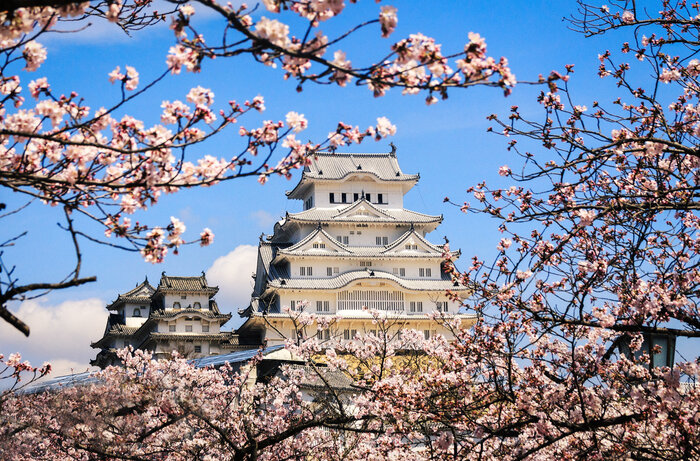
Đặc biệt, nếu có dịp đến đây vào mùa xuân thì du khách sẽ phải ngất ngây trước vẻ đẹp tuyệt mỹ của hoa anh đào, hoa mận xung quanh vườn Nishinomaru xinh đẹp của lâu đài Hạc Trắng. Quả thật đây là một không gian rất tuyệt khi chiêm ngưỡng tòa thành Himeji tráng lệ với sắc hồng trắng quyến rũ ngập tràn, những cánh hoa nhẹ nhàng lướt nhẹ trong làn gió xuân như khiến cho lòng người thêm xao xuyến, lưu luyến mãi chẳng muốn rời đi.
Website: http://himejicastle.jp/
14. Kobe Oji Zoo
Sở thú Oji là nhà của hơn 800 loài động vật, thuộc hơn 130 chủng loài khác nhau. Du khách có thể nhìn thấy rất nhiều loài động vật lớn như sư tử, gấu trúc, hươu cao cổ, voi, hổ, cho tới những chú gấu đỏ, gấu túi,... Ngoài ra, trong cơ sở của sở thú còn có cả một khu vui chơi giải trí dành cho các bạn nhỏ.
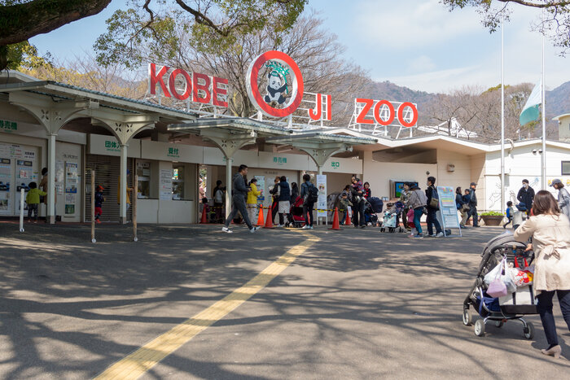
Có lẽ điều ấn tượng với du khách nhất chính là xung quanh sở thú trồng rất nhiều hoa anh đào, gần 500 cây, rợp bóng cả một khoảng sân. Du khách sẽ cảm thấy một sự hòa hợp và gần gũi với thiên nhiên thật diệu kỳ, khi vừa được chiêm ngưỡng các loài động vật, vừa được ngắm sắc hoa anh đào hồng tươi tắn phủ bóng cả sở thú. Vào mùa hoa nở, sở thú còn tổ chức các buổi ngắm hoa đêm với ánh đèn rực rỡ được mở cửa 3 ngày liên tiếp.
Website: http://www.kobe-ojizoo.jp/
15. Sumaura Koen
Công viên Sumaura là một một công viên nằm dọc sườn núi Tekkai và núi Hachibuse nhìn ra đảo Awaji và Matsubara, nơi mà bạn có thể ngắm những cây anh đào cùng đại dương xanh. Kể từ khi công viên mở cửa vào năm 1935, cây thông đen Nhật Bản và anh đào Yoshino đã được trồng và hiện nay nó đã trở thành một địa điểm nổi tiếng về hoa anh đào, nơi đây cũng được chọn là một trong những “điểm ngắm sakura đẹp nhất Kobe.
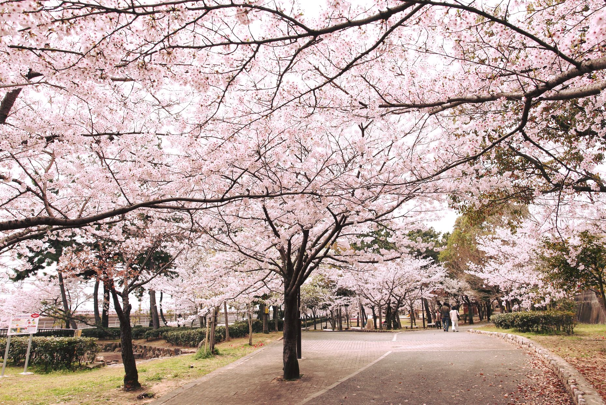
Vì nằm ở sườn núi, nên du khách hoàn toàn có thể leo bộ lên đỉnh núi hoặc ngắm cảnh sắc từ trên cao thông qua cáp treo. Một điểm nổi bật mà bạn rất ít khi gặp ở những nơi khác đó là một bức tranh thiên nhiên với hai gam màu hòa quyện đặc trưng: màu xanh của biển và bầu trời cùng với màu hồng của anh đào. Đây Là một địa điểm lý tưởng để nghỉ ngơi, tìm chốn yên tĩnh tịnh tâm sau tất cả hoạt động hàng ngày.
Website: https://www.kobe-park.or.jp/park/sumaura/